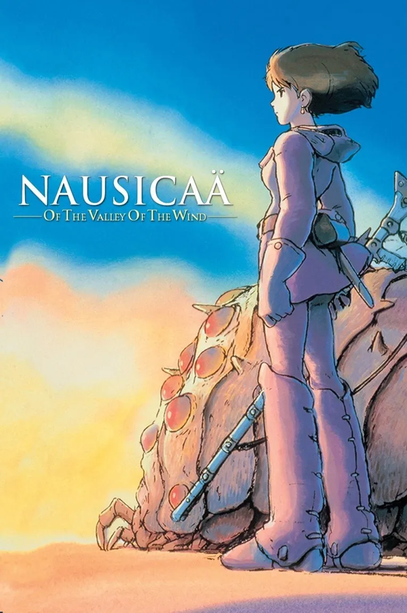
Nausicaä of the Valley of the Wind
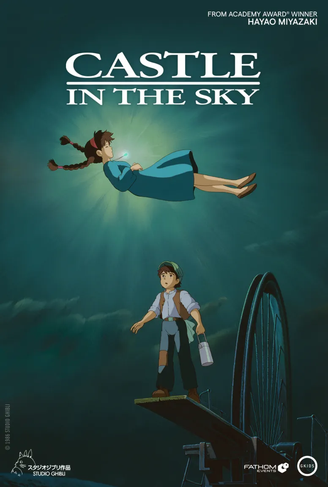
Castle in the Sky
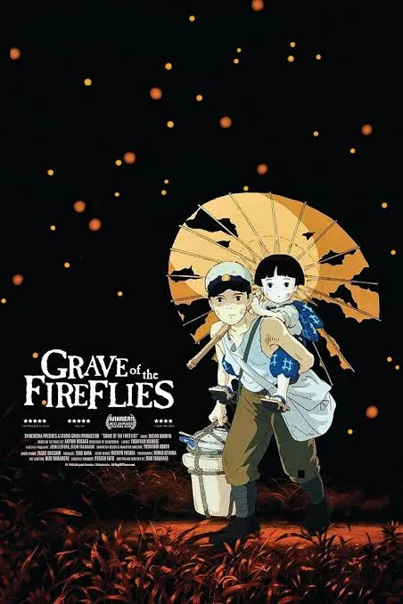
Grave of the Fireflies
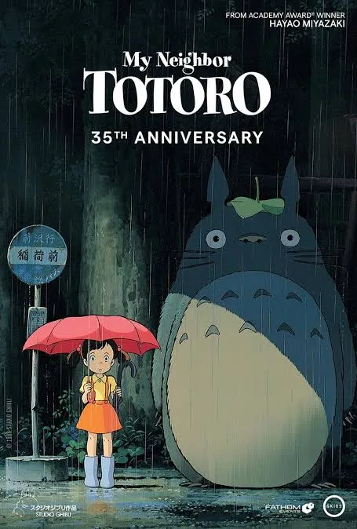
My Neighbor Totoro
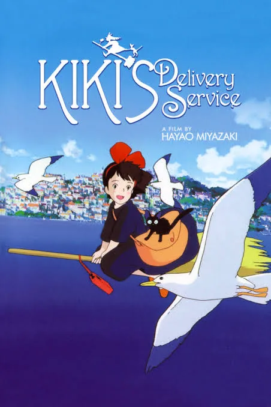
Kiki’s Delivery Service
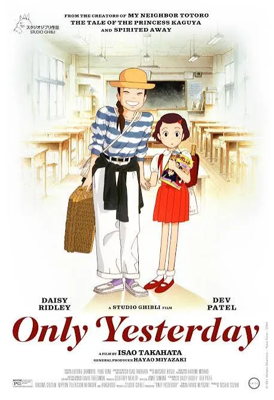
Only Yesterday
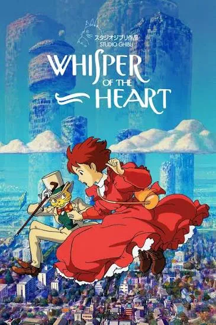
Whisper of the Heart
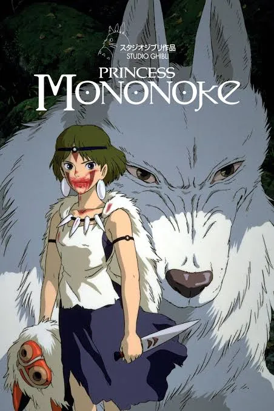
Princess Mononoke
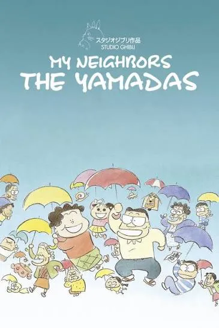
My Neighbors the Yamadas
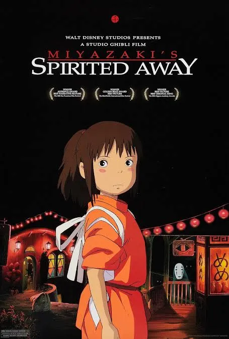
Spirited Away
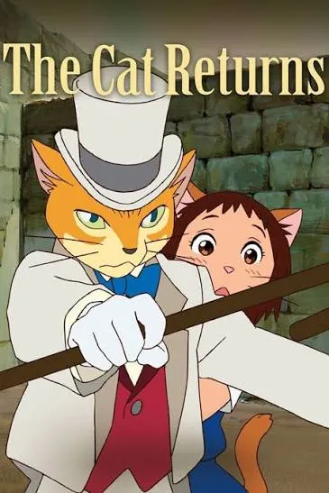
The Cat Returns
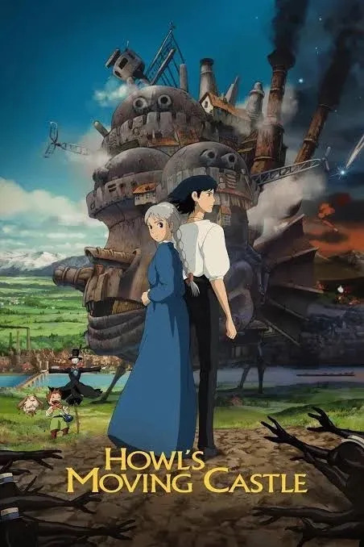
Howl’s Moving Castle
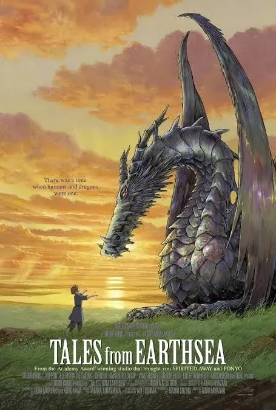
Tales from Earthsea

Ponyo
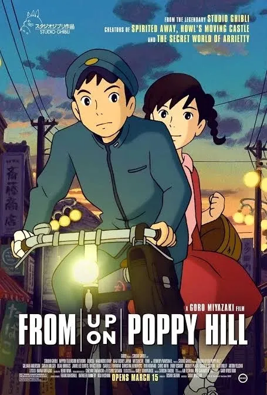
From Up on Poppy Hill
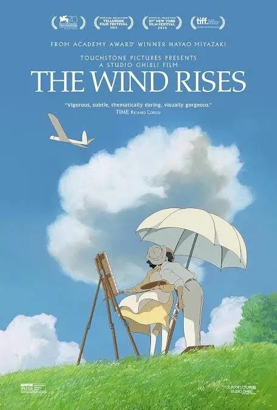
The Wind Rises
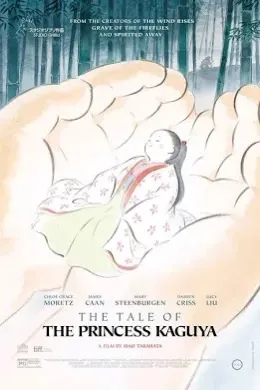
The Tale of the Princess Kaguya
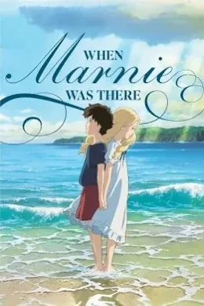
When Marnie Was There
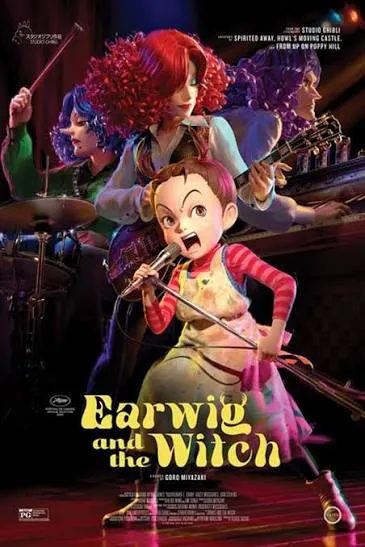
Earwig and the Witch
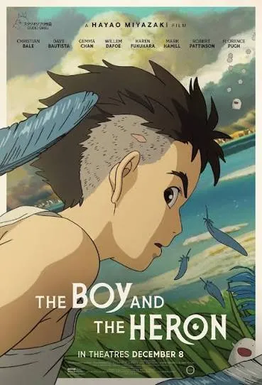
The Boy and the Heron
×
Year:
Director:
Popular Characters: